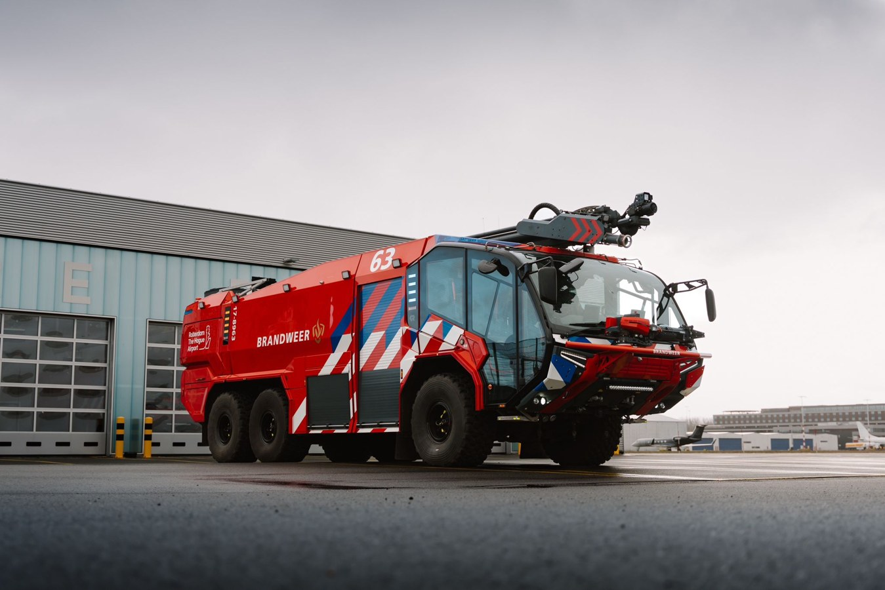

Kennis opfrissen, scores verzamelen en gericht extra instructie geven.
Deze versie bewaart scores op dit apparaat. Centrale opslag volgt in versie 2.
Geen programmeerkennis nodig.
Na publicatie plak je hier het webadres.